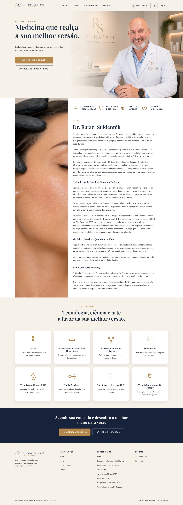
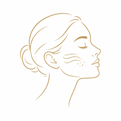

Tema sob medida
- Templates PHP separados por seção em
template-parts/ - CSS puro com tokens, mobile-first, ~1.000 linhas
- Ícones SVG inline que herdam
currentColor - Ambiente local com Docker: WordPress, MySQL e WP-CLI
Tema WordPress feito do zero, sem page builder, para um consultório de medicina estética. A identidade da clínica (creme, azul-marinho e dourado) virou um design system em CSS puro, com home em três idiomas e layout espelhado para o hebraico.
A home completa, do cabeçalho ao rodapé, capturada do tema renderizado em 1440 × 900 e em 390 × 844. Role dentro de cada moldura para percorrer a página.

Clique em qualquer tela para ampliar.
O consultório atende pacientes brasileiros, de língua inglesa e israelenses. O tema troca o idioma pelo seletor do cabeçalho e, em hebraico, espelha o layout inteiro com dir="rtl" e propriedades lógicas de CSS.
Seletor de idioma no canto do cabeçalho. Sem plugin de tradução: um dicionário em inc/i18n.php.
Tudo sai de variáveis CSS em assets/css/main.css. Os componentes abaixo são HTML vivo, com o mesmo estilo do tema: passe o mouse nos botões e nos cards.
--color-cream · #F6F1E9--color-navy · #1B2A41--color-gold · #B4894F--color-gold-dark · #9C7440--color-body · #3A3A3A--color-white · #FFFFFFSuaviza linhas de expressão com resultados naturais.

Hidratação profunda para uma pele mais viçosa.
Regeneração celular com o próprio plasma do paciente.
template-parts/currentColorschema.org/Physician na homelang e dir corretos por idiomaaria-expanded no menu mobile e no seletor de idiomaprefers-reduced-motionprocedimento com campos personalizados